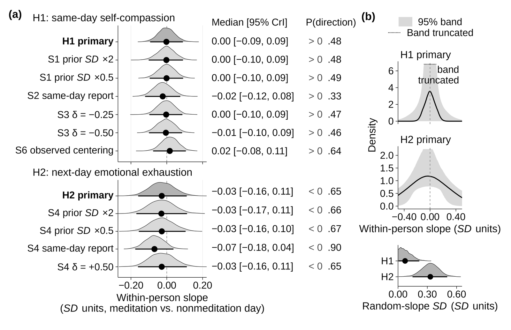
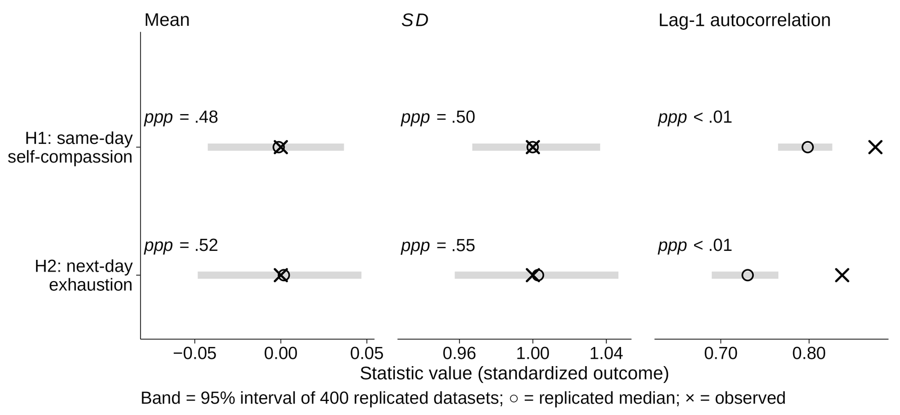

← Publication page · mjmonnot.github.io
Employee well-being · Research companion
During a two-week online self-compassion program, employees were no more self-compassionate on the days they meditated than on the days they did not.
A new analysis of a 28-day diary of 65 employees (Li et al., 2021). The original study compared the weeks of the program. This paper asks a different question: on the days a person practiced, did that person feel more self-compassionate, or less exhausted the next day, than on their own days without practice?
Three findings
- During a two-week online self-compassion meditation program, employees were no more self-compassionate on the days they meditated than on the days they did not.
- Meditating on a given day did not detectably reduce how emotionally exhausted they felt the next day.
- This does not show that meditation fails to help. A benefit that builds over days and carries into days without practice would not appear in a day-by-day comparison, and the study had 65 employees and no comparison group.
At a glance
What this means in practice
The decision
Should a short online self-compassion program be judged by whether people feel better on the days they practice?
In this diary, employees were no more self-compassionate on the days they meditated than on their own other days. The difference was 0.00 standard deviations (95% credible interval −0.09 to 0.09). The estimate for next-day exhaustion was −0.03, with an interval (−0.16 to 0.11) that includes values of both signs. The paper finds little evidence that the changes seen over the program were concentrated on practice days. A same-day comparison cannot detect a benefit that builds across days. To test practice at the day level, analyze the daily practice reports as day-level measures and state which diary day each report refers to.
What was found
- On days of meditation, same-day self-compassion did not clearly differ from the same person’s days without meditation.
- The posterior median for next-day exhaustion was −0.03 total (pooled) SD units, slightly below zero, with a 95% credible interval that includes values of both signs.
- The same-day result held when the prior scale, the reading of the morning report, the assumed values for missing self-compassion scores, and the way each person’s usual practice was estimated were changed.
What you can do with it
- Adherence items in an intervention diary can be analyzed as day-level predictors, provided missing reports and days without practice are handled explicitly.
- State which diary day each report refers to. Here, reading the morning report as describing the same day moved the exhaustion estimate from −0.03 to −0.07.
- Plan for days without practice. Longer programs, or samples that do not exclude low adherence, give more of them and a more precise answer.
The study that would take it further
- Randomize practice days, for example in a microrandomized trial, to identify day-level effects of practice.
- Measure daily demands, which would address time-varying confounding, because participants chose when to practice.
- Consider same-day perceived stress as a candidate for a confirmatory test. Its posterior median was −0.10 SD (95% credible interval [−0.25, 0.06]), with posterior probability .90 of being below zero; its timing and sign were set after the first two results were known.
The first card comes from the Results; the second from the paper’s Methodological Implications and Future Directions; the third from Future Directions. The sample was 65 snowball-sampled Chinese employees who met a seven-meditation-day minimum, in a program with no comparison group, and people chose when to practice. To talk about evaluating a program: matt@vocentive.com.
For writers and editors
In a new analysis of a 28-day diary of 65 employees in an online self-compassion program, people were no more self-compassionate on the days they meditated than on their own days without meditation, and meditating did not detectably lower next-day emotional exhaustion.
- Kind of study
- An analysis of an existing diary from a single-group program with no control group. Nobody was assigned to practice or not practice on a given day; participants chose when to meditate. The estimates are comparisons of each person with themselves across days, not effects of an assignment.
- Status
- Preprint on PsyArXiv. It has not been peer reviewed. The analysis protocol (three time-stamped versions, all dated October 24, 2026), the Stan model, and the analysis code were written before any outcome was modeled. The original report does not mention a trial registration, and the preprint does not list one for this analysis.
- Data
- The diary was collected by Li and colleagues and published in Applied Psychology: Health and Well-Being in 2021, with the data openly deposited. The author of this paper did not collect the data. The research question was not addressed in the original study, and the prior use of the data is disclosed.
- Who was studied
- 65 employees in the analytic sample, from 89 recruited by snowball sampling through social networks in China, mean age 35.65 years (SD = 6.19), 63.1% women. Race and ethnicity were not reported. The original study had excluded employees who meditated fewer than seven times.
- Funding and interests
- No conflicts of interest and no specific funding for this analysis. The original study was funded by Chinese national, provincial, and university sources. The paper discloses the use of AI tools in drafting text, writing figure code, and checking statistics.
The study supports
- “On days of meditation, same-day self-compassion did not clearly differ from the same people’s other days.”Posterior median 0.00 total (pooled) SD units, 95% credible interval [−0.09, 0.09].
- “Meditating did not detectably lower the next day’s emotional exhaustion.”Posterior median −0.03 total (pooled) SD units, 95% credible interval [−0.16, 0.11]; the interval includes values of both signs.
- “The result held under other reasonable choices.”Same-day self-compassion posterior medians stayed between −0.02 and 0.02 across the checks; the largest shift for exhaustion was to −0.07 (95% credible interval [−0.18, 0.04]).
It does not support
- “Meditation does not help.”A benefit that builds over days and persists on days without practice would not show in a same-day comparison.
- “Meditation does not change self-compassion.”There was no comparison group, so the study cannot separate the program’s changes from time, expectation, and self-monitoring.
- “This holds for all employees.”65 snowball-sampled Chinese employees who each meditated at least seven times.
- “The intervals are exact.”The model underpredicted day-to-day persistence, so the intervals may be too narrow.
Monnot, M. J. (2026). Does daily meditation increase self-compassion? A Bayesian multilevel diary study. PsyArXiv. https://doi.org/10.31234/osf.io/986ht_v1
Questions, or a quote: Matthew J. Monnot, matt@vocentive.com.
1 · Two questions that look like one
“Did the program work?” can mean two things. One is whether outcomes differ between the weeks of the program. The other is whether a person’s days of practice differ from that same person’s days without practice. The original study asked the first. This paper asks the second. Switch between them.
2 · Why a day-by-day comparison is hard here
Most days in the program were meditation days. For every employee, the study needs some days without meditation to compare against. Of the days that had a report, how many do you think were days without meditation?
About 16 in 100 reported days were days without meditation, and 12 of the 65 employees had none.
The paper counts 678 days with meditation and 132 days without. Few comparison days is why the paper used a model that estimates each person’s usual practice, in place of a simple average.
Published counts: 678 days with meditation and 132 without, out of the 810 days that had a report (the sum of the two counts; that is 84% and 16%). The 100 days with a missing report are drawn as an open bar and are left out of the percentages. These are person-days across all 65 employees, not days for one person.
Published count: 12 of 65 employees (about 18 in 100) had no day without meditation. They stayed in the model, where they informed the person-level and day-to-day persistence estimates.
3 · Read one estimate at a time
Each row is a published posterior median, in total (pooled) standard deviations of the outcome. The dot is the median and the line is its 95% equal-tailed credible interval: a range that, under the model, contains the true value with 95% probability. Zero means no difference between meditation days and other days. The paper also gives the posterior probability that the estimate runs in the predicted direction. Select a row.
4 · How the diary ran
- Recruitment89 employees recruited; 65 remain after one missing baseline, nine dropouts, six with fewer than seven meditation days, and eight given the wrong materials
- Control week7 days of diary only, with no meditation prompts or reports
- Program14 days: a body scan in week 1 and self-compassionate breathing in week 2, with a morning report of meditation in the past 24 hours
- Follow-up week7 days of diary only. Only the 14 program days enter the models
5 · What the study found, in order
- Self-compassion did not clearly differ between meditation days and other days. The within-person posterior median was 0.00 total (pooled) SD, posterior SD 0.05, 95% credible interval [−0.09, 0.09], with a .48 posterior probability of being above zero. This was the primary test.
- Next-day exhaustion was not detectably lower after meditation. The slope, adjusting for the same day’s exhaustion, had a posterior median of −0.03 total (pooled) SD, a 95% credible interval of [−0.16, 0.11], and a .65 posterior probability of being below zero. This was the secondary test.
- The first result held under every check. Doubling or halving the prior, shifting missing self-compassion values downward, and reading reports as same-day all gave posterior medians between −0.02 and 0.00, and the conventional observed-mean method gave 0.02 (95% credible interval [−0.08, 0.11]).
- How the morning report was matched to days moved the exhaustion estimate most. Reading it as describing the same day gave a posterior median of −0.07, with a 95% credible interval of [−0.18, 0.04] and a .90 posterior probability of being below zero.
- Perceived stress was an additional outcome with timing and direction set after the first two results. Next day: posterior median 0.06 total (pooled) SD, 95% credible interval [−0.09, 0.22]. Same day: posterior median −0.10, 95% credible interval [−0.25, 0.06], with a .90 posterior probability of being below zero. Both intervals include zero.
- Day-to-day persistence was present for both outcomes. The posterior median autoregression coefficient was .37 (95% credible interval [.29, .46]) for self-compassion and .48 ([.39, .56]) for exhaustion.
- What follows. The paper reads the result as little evidence that the program’s changes were concentrated on practice days. One reading is that the changes reflect being in the program. Another is that practice has a cumulative benefit that persists on days without it.
6 · The paper’s figures, with a reading guide

Select the figure to enlarge it.

Select the figure to enlarge it.
For specialists
Design, model, and the main reported estimates in one place. Estimates are posterior medians with 95% equal-tailed credible intervals in units of the total (pooled) SD of the outcome; P is the posterior probability of the prespecified direction. Results are reported descriptively, with no decision cutoff.
| Design | Analysis of the archival 28-day diary of a single-group online self-compassion meditation program with no control group (Li et al., 2021, Applied Psychology: Health and Well-Being, 13(4), 906–921). Diary: 7-day control period, 14-day intervention period (Days 7–20), 7-day follow-up. Evening diary; morning report of meditation in the previous 24 hours, assigned to the preceding diary day (meditation on day t read from the morning of day t + 1; last intervention day set to missing). Data: osf.io/pqf6v. |
|---|---|
| Sample | 89 recruited, 65 analyzed (89 − 1 − 9 − 6 − 8). 910 person-days: 678 meditation, 132 nonmeditation, 100 missing meditation reports (65 by design on Day 20). 12 persons with no nonmeditation day, all retained; all 65 had at least seven meditation days. Self-compassion and exhaustion each missing on 50 person-days. Mean age 35.65 (SD = 6.19), 63.1% women. No participants or outliers excluded. Original study approved by the Human Subject Review Board of the Department of Psychology of Sun Yat-sen University. |
| Measures | Daily Self-Compassion Scale, six items, 1–5, sum with Items 2, 4, 6 reversed (range 6–30; M = 20.82, SD = 3.49, ICC = .80). Emotional exhaustion, five items of the Maslach Burnout Inventory–General Survey, 0–6, sum (range 0–30; M = 10.69, SD = 5.34, ICC = .72). Perceived stress, four items (M = 6.09, SD = 2.33, ICC = .54). Omega within: .60 (self-compassion), .89 (exhaustion); between: .75, .97. |
| Model | Two-level Bayesian model in Stan, latent mean centering following dynamic structural equation modeling. Part 1: Bernoulli model of daily meditation with a person-specific latent propensity. Part 2: outcome on the within-person meditation term, latent propensity, weekend, day in program, and previous-day deviation (common autoregressive coefficient); random intercept and random meditation slope with correlation. H1 outcome: same-day self-compassion. H2 outcome: exhaustion on day t + 1 with exhaustion on day t as the autoregressive term (Day 8 not adjusted). Missing reports flagged, not coded as no; missing at random assumed. Outcomes standardized over each model’s analysis period. |
| Priors | Normal(0, 0.5) on fixed slopes including the within-person slope; weakly informative normal or half-normal priors on intercept, autoregression (bounded −1 to 1), standard deviations, and mean log-odds of meditation; LKJ prior on the intercept–slope correlation. Exact values are in the time-stamped protocol, except two priors set in the analysis code and not named there: a half-normal prior with scale 1 on the between-person SD of meditation log-odds, and a normal prior with SD 0.5 on one further covariate coefficient. A prior predictive check and sensitivity analyses for the LKJ prior and for priors other than the fixed-slope priors were not conducted. |
| Estimation | CmdStan 2.40.0 via cmdstanr 0.9.0, posterior 1.6.1, R 4.5.0. NUTS, four chains of 1,000 warm-up and 1,000 sampling iterations, target acceptance .95, maximum tree depth 12. Criteria: rank-normalized R̂ below 1.01, bulk and tail ESS above 400, no divergences. Across 14 fits: maximum R̂ 1.01 when rounded, minimum bulk ESS 602, no divergent transitions. Primary models: ESS minimum 1,209/2,210 (H1) and 680/780 (H2). Reliability by two-level CFA in lavaan 0.7-3 (Geldhof et al., 2014). |
| Fit | Posterior predictive checks, 400 replicated datasets per model. Mean and SD reproduced (ppp .48 and .50 for H1, .52 and .55 for H2). Lag-1 autocorrelation underpredicted: observed .88 against a replicated median of .80 [.76, .83] (H1); .84 against .73 [.69, .77] (H2); replicated value reached the observed value in 0 of 400. |
| Hypothesis 1 | Same-day self-compassion, within-person slope: 0.00 [−0.09, 0.09], posterior SD 0.05, P(b > 0) = .48. In within-person residual SD units: −0.01 [−0.21, 0.21]. Primary. |
| Hypothesis 2 | Next-day exhaustion, within-person slope: −0.03 [−0.16, 0.11], posterior SD 0.07, P(b < 0) = .65. In within-person residual SD units: −0.06 [−0.33, 0.23]. Secondary. |
| Planned sensitivity | H1: prior SD 1.0 and 0.25, 0.00 [−0.10, 0.09], P = .48 and .49; same-day alignment (S2), −0.02 [−0.12, 0.08], P = .33; missing self-compassion shifted −0.25 and −0.50 SD (S3), 0.00 and −0.01 [−0.10, 0.09], P = .47 and .46; observed person-mean centering in brms 2.22.0 (S6), 0.02 [−0.08, 0.11], P = .64. S5 (exclude fewer than seven meditation days) is identical to the primary model because no participant met the criterion. H2 (S4): prior SD 1.0 and 0.25, −0.03 [−0.17, 0.11] and [−0.16, 0.10], P = .66 and .67; same-day alignment, −0.07 [−0.18, 0.04], P = .90; exhaustion shifted +0.50 SD, −0.03 [−0.16, 0.11], P = .65. |
| Additional analyses | Perceived stress (prespecified outcome; timing and sign set after H1 and H2 results): next day 0.06 [−0.09, 0.22], P(b < 0) = .21; same day −0.10 [−0.25, 0.06], P(b < 0) = .90. Between-person coefficient g: self-compassion 0.15 [−0.38, 0.73], exhaustion −0.06 [−0.50, 0.39], perceived stress (next-day model) 0.01 [−0.86, 0.93]. Autoregression φ: .37 [.29, .46], .48 [.39, .56], perceived stress (next-day model) .17 [.08, .26]. Residual SD: 0.43 [0.41, 0.45], 0.48 [0.45, 0.51], perceived stress (next-day model) 0.65 [0.62, 0.69]. |
| Plan and deviations | Protocol in three time-stamped versions, all dated October 24, 2026, and specified a priori, except for the timing and sign of the perceived-stress analyses and the later removal of the ±0.2 SD inconclusive band and of the posterior-probability decision rule (Version 2 raised its cutoff; Version 3 corrected how the sign was applied). The reliability computation was corrected after data release to implement Equation 3 of Geldhof et al. (2014). A sensitivity analysis for missing meditation reports was added after data release, with code locked before any run; its result will be reported in a revision. Two priors were set in the code but not named in the protocol. S6 effective sample sizes were extracted post hoc from a seeded rerun that matched the original byte for byte. |
| Materials | Data: original authors’ OSF deposit (osf.io/pqf6v). Protocol, version history, Stan model, and code: github.com/mjmonnot/selfcompassion-diary-preprint. Reporting follows JARS-Quant, with CONSORT 2010 and STROBE for participant flow. Counts below 10 are shown as <10, except exact counts for the exclusion flow and for Day 7 and Day 20 missingness. |
What this site does and does not show
- No participant-level data are hosted here. Every number on this page is either a published aggregate from the preprint or a rounded display computed from one, and each computed display is labeled as such.
- The diagram in section 1 is an illustration. It is not drawn from the study’s data.
- The bars in section 2 show published counts: 132 days without meditation against 678 with meditation (about 16 and 84 of 100 reported days, leaving out the 100 days with a missing report), and 12 of 65 employees (about 18 of 100).
- A directional probability is the posterior probability that the slope has the predicted sign. It does not show how large the effect is; the posterior median and 95% credible interval show the estimated size and its uncertainty.
- The estimates are within-person associations from a single-group program in which people chose when to practice. Unmeasured daily demands could confound them, and the paper notes that a design that randomizes practice days would be needed to identify day-level effects.
- This page was built with HTML, CSS, and JavaScript; the paper does not cover the build.
- The sample is 65 snowball-sampled Chinese employees who met a seven-meditation-day minimum, and the model pools the two weeks’ different meditations.
Tools used
R 4.5.0 (Stan via CmdStan 2.40.0, cmdstanr 0.9.0, posterior 1.6.1, brms 2.22.0, lavaan 0.7-3).